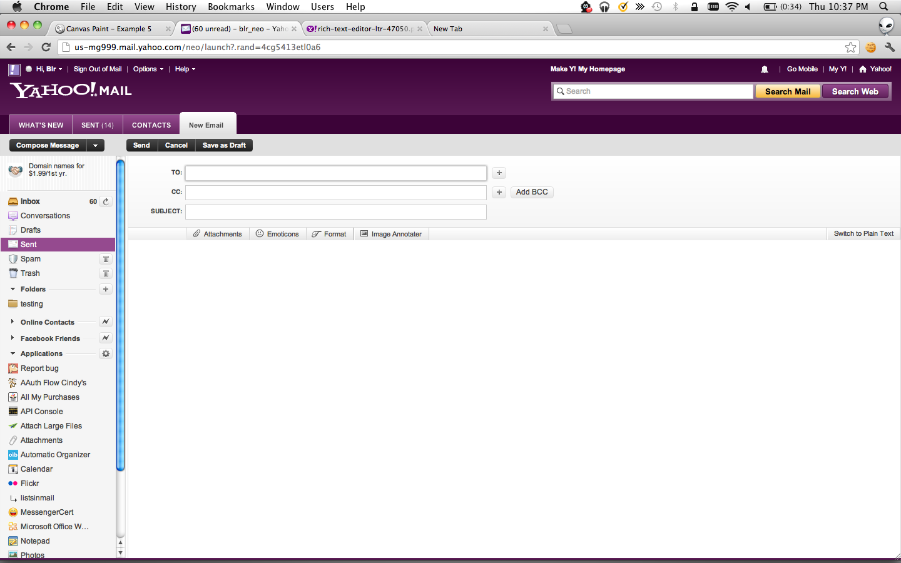

INline Image ANNOTATOR
PLEASE PRESS RIGHT ARROW KEY
TO SEE THE NEXT SLIDE
OUR IDEA
WE WILL BE PRESENTING OUR IDEA IN THE FOLLOWING SLIDES
Once upon a time a Yahoo Mail user came across a beautifull scenic picture
He thought of modifying the image and make it a bit more funny. But he
had no image editor , So our latest image annotator in Yahoo mail came
handy.

So here he clicks on this
BRAND-NEW Image Annotator tab
The user just does a simple
Cmd+C and Cmd+V and pastes the image
Then using simple tools like pencils and line drawing tools modifies the
image
Once done editing, The user can also write his own comments and then just
hit the send button.
Gets the Send Confirmation like any other normal mail
The Recipient when opens up the mail can see the modified image.
But now the recipient also feels like editing the image and so he too
uses our "IMAGE ANNOTATER" and draws some more stuff to the same image
The first user receives the mail, and is Happy to see his upgraded image.
Opportunities
- First Movers Advantage
- Increase in User Engagement
- User Retention
- Can extend to other products like
- Flickr
- News
- Answers
- And Tons of other Y! Products
Thanks
Hoping forward to demo the working prototype.
BY
-KEVIN PATEL &
-SARBBOTTAM BANDYOPADHYAY